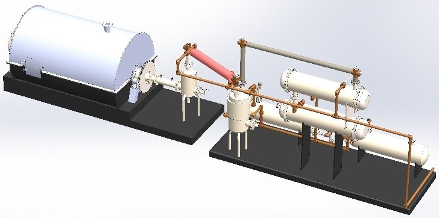
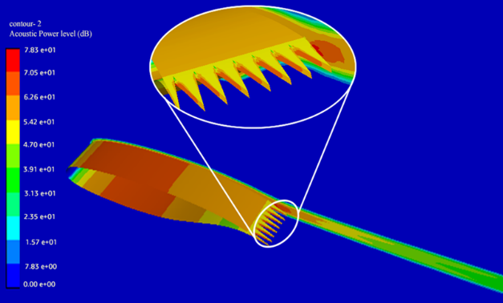

Pyrolysis Plant
This is is the CAD model of the Pyrolysis Plant located at Nepal Academy of Science and Technology (NAST). I worked as an intern at NAST, completing the drafting and CAD modelling of this Pyrolysis Plant.
Aeroacoustics & Biomimicry
As a final year project, we wrote a thesis on the effect of serration on aeroacoustic performance of a supercritical airfoil. You can read the paper here .
Sorting Machine
This video is a animated demonstration of a project we completed during undergraduate studies. The object of this project is to separte the defective items from the rest based on the color of the items using color sensor and Arduino.
Clay Pot Maker

We completed this project at National Innovation Center (NIC). The purpose of this machine is to make clay pots (Nepali: Gamala).
Fourier Drawing

This is a fun programming work completed using Mathematica. Inspired by the video on Epicycles by Mathologer, I modified the code so that it can draw complex line arts. The code divides the art into multiples closed curves rather than just one very long curve and performs fourier trasform on each of those to generate the art. It then exports the animated art as a video file.